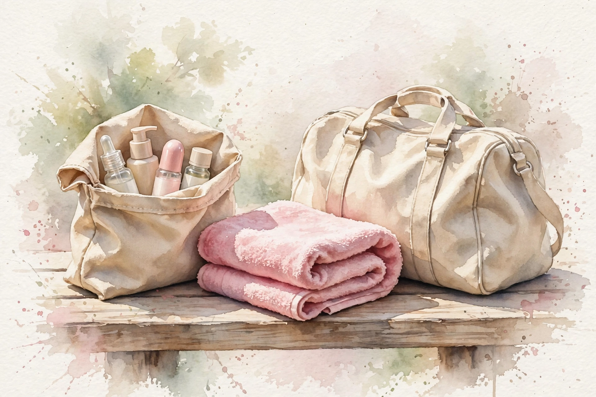
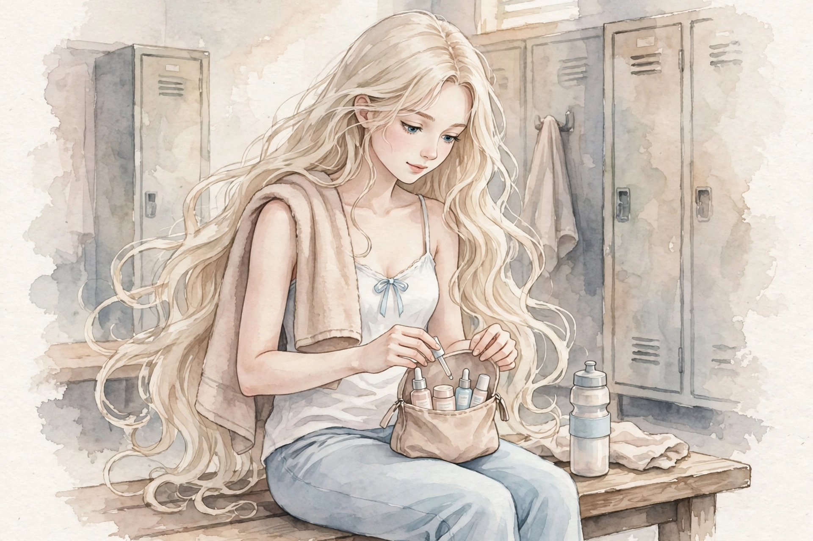

運動のあとのスキンケアの段取り

運動のあとは汗と皮脂が混ざり合い、顔も体も、普段とは違う状態になっています。パーソナルトレーナーとしての仕事でも、運動後のケアの相談を受けることがあります。この記事では、運動直後と帰宅後に分けた、段取りの考え方を整理します。
直後の基本は「流す・洗う・付ける」の順
運動直後は、まず汗を流すことから始めます。シャワーがある施設なら、ぬるま湯で汗を流し、洗顔はそのタイミングで済ませるのが効率的です。汗をかいた状態で長く放置すると、乾いた汗が肌に残ります。タオルで拭うだけの日は、帰宅後なるべく早く洗う流れを作っておくと安心です。
洗ったあとは、乾燥を感じる前に化粧水を付けるのが基本です。運動後は体温が上がり、水分が飛びやすい状態です。施設のロッカーでは手順を最小限にして、「洗う、化粧水、仕上げ」の3つに絞ると、混雑する時間帯でも慌てずに済みます。
ジムバッグに入れる最小セット
持参品は、小さなポーチ1つに収まる量が目安です。洗顔料の小分け、化粧水、仕上げのクリーム、そして清潔なタオル。これだけあれば、直後のケアは成立します。小分け容器に移すときは、中身の名前と移した日付を書いておくと、混同を防げます。
シートタイプの拭き取り用品は、シャワーが使えない日の応急として持っておくと便利です。ただし、それで毎回済ませるのではなく、「今日は応急、帰宅後にきちんと洗う」という位置づけにしておくのがおすすめです。
帰宅後に回すケアの分け方
直後のケアを最小限にした分、帰宅後の夜のケアで、ゆっくり付ける手順を楽しむ分け方もあります。運動した日は体も温まっていますから、入浴のタイミングと夜のケアをひと続きにすると、流れが作りやすくなります。
なお、運動後に肌の赤みやかゆみがいつもと違う形で出る場合は、無理をせず様子を見て、続くようなら皮膚科などの専門家に相談してください。運動とケアは、どちらも「続けられる形」が一番です。
運動の頻度に合わせて、置き場所を分ける
週に何度も通う方は、ジムバッグに入れっぱなしにする形が便利ですが、中身の状態には注意が必要です。バッグの中は温度が上がりやすい場所でもあります。小分けしたアイテムは、定期的に新しいものと入れ替える日を決めておくと安心です。開封日や詰め替え日を小分け容器に書く習慣は、ここでも役立ちます。
たまに運動する方は、そのつど洗面所から持っていく形でも構いません。大切なのは、運動のあとの流れが「考えなくても動ける」状態になっていることです。段取りは、頻度ではなく、迷いのなさで決まります。自分の通い方に合った形を選んでください。
運動のあとは、顔だけでなく体にも汗が残ります。シャワーでは、首の後ろ、背中、足の裏など、汗がたまりやすい場所を意識して流してください。体を洗うアイテムは施設の備え付けを使う場合もありますが、顔に使うものとは分けて考えるのが基本です。
帰宅が遅くなる日は、施設でのケアを少し厚くするなど、曜日のパターンで段取りを変える方法もあります。運動の予定とケアの段取りをセットで組むことが、無理なく続けるための実務的な工夫です。
運動のあとのケアでは、髪と頭皮の扱いも無関係ではありません。汗をかいた頭皮は、その日のうちに洗うのが基本の考え方です。帽子やヘアバンドを使った日は、汗がこもりやすいので、帰宅後の洗髪までの時間をなるべく短くする意識を持ってください。
運動の頻度が高い方は、洗う回数が増えるぶん、1回ごとの丁寧さと、洗ったあとの保湿の流れが大切になります。回数の多さを負担にしないためには、やはり段取りの単純さが効いてきます。
運動とケアは、どちらも「体の声を聞く」作業です。その日の疲れ具合に合わせて、ケアの厚さを調整する柔軟さも、段取りの一部にしておきましょう。

セラフィナ「汗をかいた日は、段取りを先に決めておくんだね。最小セットが味方だよ」